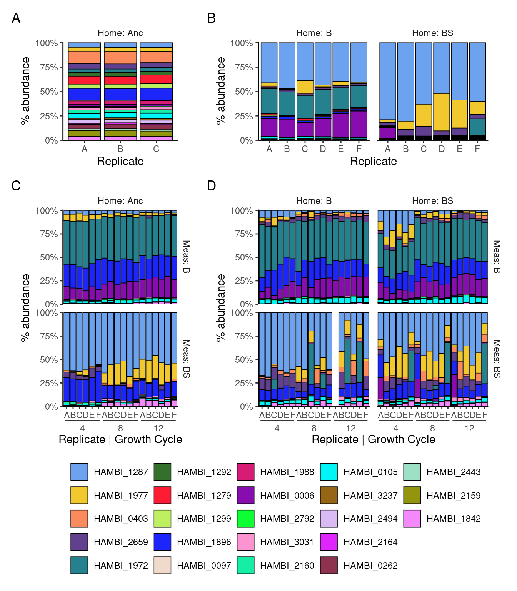

Bar plot of species abundance data
Community composition workflow
Abstract
This notebook plots community composition of the experiment as a bar plot
1 Setup
Loads required libraries and sets global variables
2 Read
Read species abundance data (16S v3 amplicon counts) and do some light formatting of metadata
Show/hide code
sptable <- readr::read_tsv(here::here(data_sp, "species_counts_md.tsv")) %>%
dplyr::mutate(transfer = day/7)
counts_f <- sptable %>%
dplyr::group_by(sample) %>%
dplyr::mutate(f=count_correct/sum(count_correct)) %>%
dplyr::ungroup() %>%
dplyr::mutate(measure_env_short = dplyr::case_when(measure_env == "bact" ~ "Meas: B",
measure_env == "bact_strep" ~ "Meas: BS")) %>%
dplyr::mutate(home_env_short = dplyr::case_when(
evolution_env == "anc" ~ "Home: Anc",
evolution_env == "bact" ~ "Home: B",
evolution_env == "bact_strep" ~ "Home: BS")) %>%
dplyr::mutate(
measure_env_short = factor(measure_env_short, levels = c("Meas: B", "Meas: BS")),
home_env_short = factor(home_env_short, levels = c("Home: Anc", "Home: B", "Home: BS")),
day = factor(day),
replicate = factor(replicate),
strainID = factor(strainID, levels = names(hambi_colors)))3 Formatting
Some light formatting to subset data into distint tibbles for later plotting
Show/hide code
# these are communities of a (supposedly) known composition. Can be used with metacal
pos_ctrl_samples <- counts_f %>%
dplyr::filter(str_detect(sample, "pos_ctrl"))
# these are samples taken directly from YSK and represent the composition of the communities used to start the experiment
t0_samples <- counts_f %>%
dplyr::filter(!str_detect(sample, "pos_ctrl")) %>%
dplyr::filter(day == 0)
# only samples from the experiment
counts_f_experiment <- dplyr::anti_join(counts_f, pos_ctrl_samples,
by = join_by(sample, strainID, genus,
species, count, count_correct,
replicate, day, measure_env,
evolution_env, transfer, f,
measure_env_short, home_env_short)) %>%
dplyr::anti_join(., t0_samples,
by = join_by(sample, strainID, genus, species, count,
count_correct, replicate, day, measure_env,
evolution_env, transfer, f, measure_env_short,
home_env_short)) %>%
dplyr::mutate(
measure_env_short = factor(measure_env_short, levels = c("Meas: B", "Meas: BS")),
home_env_short = factor(home_env_short, levels = c("Home: Anc", "Home: B", "Home: BS")),
day = factor(day),
replicate = factor(replicate),
strainID = factor(strainID, levels = names(hambi_colors)))4 Visualize community composition
Using ggplot2 to plot bar plots of species composition from the experiment and the intial material used to seed the experiment
Show/hide code
# custom barplot theme
mybartheme <- function(...){
ggplot2::theme(
panel.spacing = unit(0.5,"line"),
strip.placement = 'outside',
strip.background = element_blank(),
panel.grid = element_blank(),
panel.border = element_blank(),
panel.background = element_blank(),
#axis.text.x = element_blank(),
axis.line.x = element_line(color = "black"),
axis.line.y = element_line(color = "black"),
legend.title = element_blank(),
legend.background = element_blank(),
legend.key = element_blank(),
legend.position = "bottom",
...)
}
# Base function for making the subplots
basebar <- function(.data, x = x, xlab = xlab, xgrid = NULL){
ggplot2::ggplot(.data) +
ggplot2::geom_bar(aes(y = f, x = {{ x }}, fill = strainID), color="black", linewidth=0.25, stat="identity") +
ggplot2::labs(x = xlab, y="% abundance", fill="") +
ggplot2::scale_fill_manual(values = hambi_colors) +
ggplot2::scale_y_continuous(limits = c(0,1.01), expand = c(0, 0), labels = percent) +
ggplot2::scale_x_discrete(guide = ggh4x::guide_axis_nested()) +
ggplot2::theme_bw() +
mybartheme()
}
A <- t0_samples %>%
dplyr::filter(evolution_env == "anc") %>%
basebar(x = replicate, xlab = "Replicate") +
ggplot2::facet_grid( ~ home_env_short)
B <- t0_samples %>%
dplyr::filter(evolution_env != "anc") %>%
basebar(x = replicate, xlab = "Replicate") +
ggplot2::facet_grid( ~ home_env_short)
C <- counts_f_experiment %>%
dplyr::filter(evolution_env == "anc") %>%
basebar(x = interaction(replicate, transfer), xlab = "Replicate | Growth Cycle") +
ggplot2::facet_grid(measure_env_short ~ home_env_short)
D <- counts_f_experiment %>%
dplyr::filter(evolution_env != "anc") %>%
basebar(x = interaction(replicate, transfer), xlab = "Replicate | Growth Cycle") +
ggplot2::facet_grid(measure_env_short ~ home_env_short)Makes a final patchwork object and saves the results as raster and vector
